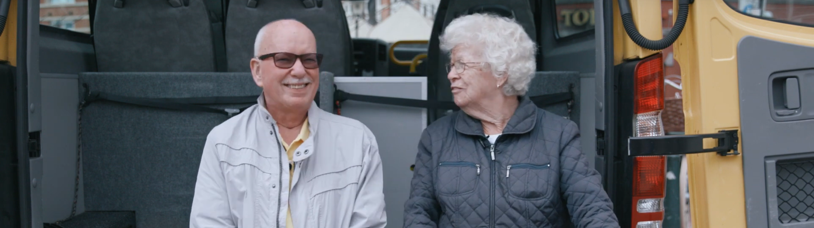

ritten met de buurtbus per maand

Samen sterk in de
wijk.
Wat we doen
Wij helpen inwoners mee te blijven doen: met vervoer, ontmoetingsplekken, mantelzorgondersteuning en een warm netwerk van vrijwilligers.
Word vrijwilliger
Een paar uur per week maakt al een groot verschil. Rijd mee, schenk koffie of help bij activiteiten.
Bekijk vacaturesBuurtbus
Van deur tot deur, voor boodschappen of bezoek.
Wij denken met je mee
Of je nu vragen hebt over eenzaamheid, mantelzorg of vervoer — onze consulenten staan voor je klaar. Neem gerust contact op.
Contact opnemen